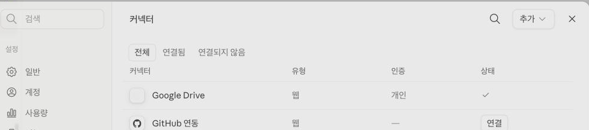
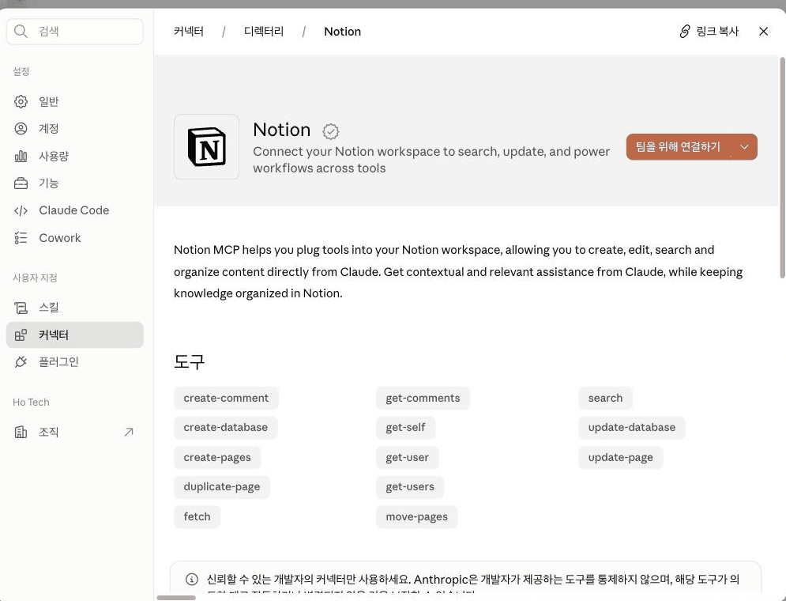
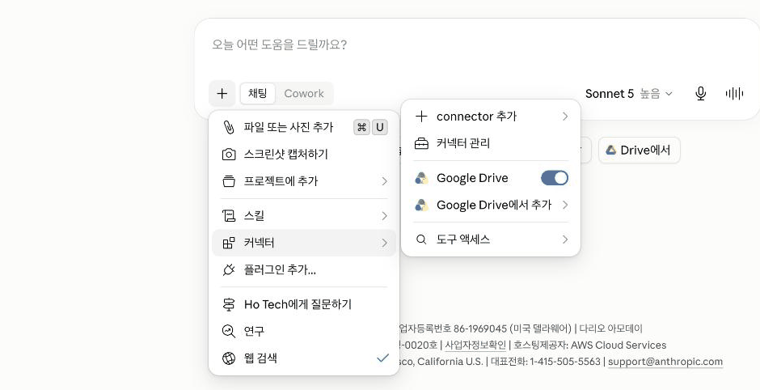

Claude · 중급 · 모듈 04
Claude가 내 앱과 서비스의 데이터를 읽고, 그 안에서 작업까지 하게 만듭니다. 이 모듈의 핵심은 연결 방법이 아니라 무엇을 허용하고 있는지 읽어 내는 힘입니다.
이 모듈을 마치면 다음을 할 수 있습니다.
| 항목 | 내용 |
|---|---|
| 필요 플랜 | Pro 또는 Max. Team·Enterprise는 조직 활성화 선행(3-3). |
| 설치 | 불필요. |
| 사전 지식 | 중급 03 수료. Claude Code 초급 03의 승인 화면 읽기 습관이 그대로 쓰입니다. |
| 실습용 커넥터 | 조직에서 정해 주셔야 합니다(3-4). 미정이어도 6단계까지는 그대로 진행됩니다. |
| 예상 사용량 | 프롬프트 2회. 대부분 화면 조작과 판단 실습입니다. |
아래는 2026-08-26 기준 실제 claude.ai 화면(한국어 UI)을 직접 열어 확인한 명칭입니다. 영문 공식 문서의 표현과 실제 화면의 한국어 라벨이 다른 경우가 있어 함께 적었습니다.
| 이 문서에서 부르는 이름 | 실제 화면 표기 / 확인 상태 |
|---|---|
| 설정 진입 경로 | 왼쪽 하단 프로필 아이콘 → "사용자 지정"(Customize) → "커넥터"(Connectors). claude.ai/connectors를 주소창에 직접 입력하면 이 설정 화면이 아니라 공개 디렉터리(claude.ai/directory)로 연결됩니다 — 로그인한 계정의 연결 목록을 보려면 반드시 설정 메뉴를 거쳐야 합니다. 확인됨(라이브 테스트) (2026-08-26 확인) |
| 커넥터 관리 화면의 "추가" 버튼 | "+" 아이콘이 아니라 "추가" 드롭다운 버튼입니다. 클릭하면 "커넥터 둘러보기"(디렉터리 열기)와 "커스텀 커넥터 추가" 두 항목이 나옵니다. 확인됨(라이브 테스트) (2026-08-26 확인) |
| 채팅의 "+" 메뉴 | 메시지 입력창 왼쪽의 "+" 버튼(마우스를 올리면 "파일, 커넥터 등 추가" 툴팁·단축키 / 표시)을 클릭하거나 /를 입력합니다. 목록에 "커넥터" 항목이 있고, 마우스를 올리면 하위 메뉴가 열립니다. 확인됨(라이브 테스트) (2026-08-26 확인) |
| "Tool access"(도구 액세스) | 채팅의 "+" → "커넥터" → "도구 액세스". 옵션 이름은 "Auto"/"On demand"가 아니라 "도구가 이미 로드됨"(기본값)과 "필요할 때 도구 로드"입니다. 확인됨(라이브 테스트 + 공식 문서) (출처: support.claude.com/en/articles/11176164, 2026-08-26 확인) |
| "Tool permissions"(도구 권한) | 기존 문서에 없던 항목입니다. 연결된 커넥터를 클릭하면 나오는 상세 화면에 "도구 권한" 섹션이 있고, 도구마다 "항상 허용"·"확인"·"거부" 3단계로 설정합니다(4-3). 확인됨(라이브 테스트 + 공식 문서) (출처: support.claude.com/en/articles/11176164, 2026-08-26 확인) |
Team·Enterprise 구성원이 커넥터를 쓰려면 Owner 또는 Primary Owner가 조직에 대해 먼저 켜야 합니다. 다만 조직에서 켠다고 해서 자동으로 접근 권한이 생기지는 않습니다 — 각자가 개별로 인증해야 비로소 쓸 수 있습니다. 관리자는 조직 설정(Organization settings) > 커넥터에서 먼저 추가하고, 구성원은 평소처럼 Customize > Connectors에서 "연결"을 클릭합니다. (출처: support.claude.com/en/articles/11176164, support.claude.com/en/articles/11175166, 2026-08-26 확인)
조직 설정과 조직 단위 권한 제한(4-3의 "도구 권한"을 조직 전체에 강제하는 기능 포함)은 관리자 영역이라 상급 트랙에서 다룹니다.
이 커리큘럼은 특정 커넥터를 지정하지 않습니다. 커넥터는 Claude에게 그 서비스의 실제 권한을 주는 일이라, 어떤 서비스를 붙일지는 사내 보안 정책이 정해야 합니다. Claude Code 중급 05에서 MCP 서버를 지정하지 않은 것과 같은 이유입니다.
교육 담당자가 아래를 정해 이 절을 채워 주세요.
정해지기 전까지는 디렉터리 탐색과 권한 평가, 대화별 도구 접근 제어를 실습합니다. 그 부분만으로도 5번 절은 완결됩니다.
커넥터를 연결하는 순간, Claude는 내가 그 서비스에서 할 수 있는 일을 할 수 있게 됩니다. 공식 문서의 경고를 그대로 옮기면 — 서비스에 연결할 때 여러분은 내 계정 권한에 기반해 그 서비스의 데이터에 접근하고 경우에 따라 수정할 권한을 Claude에게 부여하는 것이므로, 신뢰할 수 있고 워크플로에 실제로 필요한 서비스만 연결해야 합니다. (출처: support.claude.com/en/articles/11176164, 2026-08-20 확인)
커넥터는 Claude가 내 앱과 서비스에 접근해 데이터를 가져오고, 연결된 서비스 안에서 작업을 수행하게 합니다. 예를 들어 이슈를 만들거나, 메시지를 보내거나, 파일을 검색합니다. (출처: support.claude.com/en/articles/11176164, 2026-08-20 확인)
Claude는 각 사람의 권한을 연결된 서비스로부터 그대로 물려받습니다. 원본 시스템에서 어떤 파일·채널·레코드에 접근할 수 없는 사람이라면, Claude에서도 커넥터가 그것에 닿지 못합니다. (출처: support.claude.com/en/articles/11176164, 2026-08-20 확인)
즉 커넥터는 내 권한을 확장하지 않고 그대로 옮겨 옵니다. 문제는 "권한이 늘어나는 것"이 아니라 "내 권한이 자동으로 행사되는 것"입니다.
웹 검색이 공개된 정보를 가져온다면, 커넥터는 내 계정으로만 볼 수 있는 정보를 가져옵니다. 위험의 성격이 다르므로 판단 기준도 달라야 합니다. 공식 자료 미확인 — 웹 검색의 기본 활성 여부와 세부 동작은 이 모듈에서 확인하지 못해 개념 대비로만 다룹니다.
공식 문서에는 "권한은 물려받는다"는 원칙만 나오고, 실제로 몇 단계로 통제하는지는 화면을 직접 열어야 보입니다. 2026-08-26 기준 라이브 화면에는 세 겹이 있었습니다.
| 겹 | 어디서 | 무엇을 정하는가 |
|---|---|---|
| ① 연결 여부 | Customize > Connectors | 이 서비스를 Claude에 붙일 것인가. 인증까지 마쳐야 성립 |
| ② 도구별 권한 | 연결된 커넥터를 클릭 → "도구 권한" | 그 커넥터가 제공하는 도구 하나하나를 "항상 허용" · "확인"(매번 물어봄) · "거부" 중 어디에 둘지. 읽기 전용 도구와 쓰기/삭제 도구가 그룹으로 나뉘어 있고, 그룹째 바꾸거나 도구 하나씩 따로 바꿀 수 있습니다. 조직이 특정 도구를 잠가 두면(자물쇠 아이콘) 개인이 "항상 허용"으로 바꿀 수 없습니다 — 조직 단위 설정은 상급 트랙 |
| ③ 대화별 사용 여부 | 채팅의 "+" → 커넥터 | ①②를 다 통과했어도 이 대화에서 쓸지는 따로 켜고 끔 |
③이 특히 중요합니다. 사내 시스템에 붙여 두었더라도 관계없는 대화에서는 꺼 두는 것이 안전합니다. 실습 7단계에서 이 조작을 익힙니다. ②는 6단계에서 연결 직후 화면에서 실제로 봅니다. (라이브 테스트 + 출처: support.claude.com/en/articles/11176164, 2026-08-26 확인)
커넥터를 많이 붙이면 대화 시작 시 도구 정보가 컨텍스트를 차지합니다. 채팅의 "+" → "커넥터" → "도구 액세스"에서 모드를 고를 수 있습니다. 실제 화면의 옵션 이름은 "도구가 이미 로드됨"(기본값, 도구가 항상 표시되어 매번 쓸 수 있지만 대화가 더 자주 압축됨)과 "필요할 때 도구 로드"(도구를 미리 로드하지 않아 대화가 덜 압축됨) 두 가지입니다. 대부분의 사용자에게는 기본값이 알맞고, 활성 커넥터가 10개 이상이면 "필요할 때 도구 로드"로 바꾸는 것을 고려하라고 안내합니다. (출처: support.claude.com/en/articles/11176164, 2026-08-26 확인 — 옵션 이름은 라이브 화면에서 재확인)
"도구 액세스"(방금 설명한 것)는 도구 정보를 언제 컨텍스트에 올릴지를 정합니다. "도구 권한"(4-3의 ②)은 그 도구를 실행해도 되는지를 정합니다. 이름이 비슷해 헷갈리기 쉬우니 구분해 두세요.
| 제약 | 내용 |
|---|---|
| 데이터 처리 위치 | 연결된 서비스는 자체 인프라에서 자체 약관에 따라 데이터를 처리하며, 미국 밖에 있을 수 있습니다. Enterprise의 미국 내 추론 설정 같은 것도 제3자 서비스가 어디서 동작하는지는 바꾸지 못합니다. |
| 프로젝트 제한 (Team·Enterprise) | 커넥터는 비공개 프로젝트에서만 쓸 수 있습니다. |
| 공유 제한 (Team·Enterprise) | 동기화된 콘텐츠가 있는 대화는 공유할 수 없습니다. |
| 커스텀 커넥터 | Anthropic의 IP 대역을 포함해 공개 인터넷에서 접근 가능한 HTTPS 주소여야 합니다. VPN·사내 방화벽 뒤의 서버는 그대로는 연결되지 않습니다. 보통 OAuth 인증 과정을 거치며, "고급 설정"에서 OAuth Client ID·Secret을 직접 지정할 수도 있습니다. |
| 요금제별 커스텀 커넥터 개수 | Free는 1개로 제한됩니다. Pro·Max·Team·Enterprise는 개수 제한이 없습니다. |
위 사항은 모두 공식 문서에 명시돼 있습니다. (출처: support.claude.com/en/articles/11176164, support.claude.com/en/articles/11175166, 2026-08-26 확인) 커스텀 커넥터 제작(=MCP 서버를 직접 만드는 것)은 상급 트랙에서 다룹니다. 실습 3단계의 "추가" 드롭다운에는 "커스텀 커넥터 추가" 메뉴도 함께 보이는데, 이 모듈에서는 이름·서버 URL을 입력하는 화면 구성만 확인하고 실제로 만들거나 등록하지는 않습니다.
만들 결과물: 후보 커넥터 하나에 대한 권한 평가 기록과, 대화별 도구 접근을 켜고 끈 경험.
왼쪽 하단 프로필 아이콘 → "사용자 지정" → "커넥터"를 클릭합니다(=Customize > Connectors). 주소창에 claude.ai/connectors를 직접 입력하지 마세요 — 이 설정 화면이 아니라 로그인 여부와 무관한 공개 디렉터리로 연결됩니다. 이미 연결된 서비스가 있으면 여기 표로 보입니다.
2026-08-26 라이브 확인: 표 열은 커넥터/유형/인증/상태 4개이고, "추가" 버튼은 "+" 아이콘이 아니라 텍스트 드롭다운입니다.

새 대화를 열고 메시지 입력창 왼쪽의 "+"를 클릭하거나 /를 입력해 메뉴를 엽니다(툴팁: "파일, 커넥터 등 추가"). 목록에서 "커넥터" 위에 마우스를 올려 하위 메뉴가 나오는지 봅니다.
두 경로가 있다는 점이 요점입니다. 설정에서는 연결·도구별 권한을 관리하고, 채팅에서는 이 대화에서 쓸지를 정합니다(4-3).
1단계 화면에서 "추가" 드롭다운을 열고 "커넥터 둘러보기"를 클릭합니다. "인기 커넥터" 카드 목록과 검색창이 있는 디렉터리가 열립니다(전체 2천 개 이상). 같은 드롭다운의 "커스텀 커넥터 추가"는 사전 구축된 목록에 없는 서비스를 MCP 서버 URL로 직접 등록할 때 쓰는데, 이 실습에서는 열어만 보고 저장하지 않습니다(4-5).
디렉터리에서 사내에서 실제로 쓰는 서비스 중 하나를 골라 카드의 이름(또는 아이콘)을 클릭해 상세 페이지로 들어갑니다. 카드 오른쪽에는 별도의 "+" 추가 버튼도 있는데, 상세 페이지를 거치지 않고 바로 연결 절차로 넘어갈 수 있으니 아직 연결 여부를 판단하기 전이라면 이 "+" 버튼은 누르지 마세요.
아직 연결하지 마세요. 상세 페이지만 엽니다.
상세 페이지에는 한 줄 소개, 설명 문단(영어로 나오는 경우가 많습니다), "도구" 섹션이 있습니다. "사용 사례"나 "읽기/쓰기 권한"이라는 문장은 따로 없습니다 — "도구" 아래 나열된 낱개 도구 이름(예: search, get-users, create-pages, update-page, move-pages)이 그 커넥터가 실제로 할 수 있는 일 전부입니다.
이름 앞부분으로 읽기/쓰기를 직접 구분합니다. get-·search·fetch류는 대개 읽기 전용이고, create-·update-·delete-·move-·duplicate-류는 쓰기·변경입니다. 이 구분 자체가 이 모듈이 기르려는 "무엇을 허용하는지 읽어 내는 힘"입니다.
읽기만 하는 커넥터와 쓰기까지 하는 커넥터는 위험이 다릅니다. 도구 이름만으로 동작이 명확하지 않으면(예: move-pages가 삭제인지 이동인지) 페이지 하단의 "문서" 링크에서 확인하세요.
페이지 하단에는 "신뢰할 수 있는 개발자의 커넥터만 사용하세요" 경고와 함께 카테고리·커넥터 URL·제작사·추가된 시점·로그인 필요 여부·문서 링크 메타데이터가 있습니다. Anthropic이 아니라 각 서비스 개발자가 도구를 제공하며, Anthropic은 그 도구의 동작을 통제하지 않는다는 점도 이 경고에 명시돼 있습니다.
2026-08-26 라이브 확인: 예시는 Notion 커넥터(디렉터리에서 조회만, 연결하지 않음). 학습자는 실습 3단계에서 고른 실제 후보의 상세 페이지를 봅니다.

4단계에서 읽은 내용을 프롬프트 A로 정리합니다. 이 응답이 이 모듈의 결과물이며, 사내 승인을 요청할 때 그대로 쓸 수 있습니다.
여기까지가 연결하지 않고도 할 수 있는 전부입니다. 실습용 커넥터가 정해지지 않았다면 9단계로 건너뛰어 마무리하세요.
이 단계는 3-4에서 조직이 정한 커넥터에 대해서만 진행합니다. 승인 목록에 없는 서비스를 임의로 연결하지 마세요.
상세 페이지의 연결 버튼을 클릭하고 인증 안내를 따릅니다. 버튼 이름은 상황에 따라 다르게 보일 수 있습니다 — 이미 목록에 있던 커넥터는 단순히 "연결"이라고만 나오지만, Team·Enterprise 조직에서는 "팀을 위해 연결하기"(조직 구성원이 함께 쓰는 연결)와 드롭다운의 "Connect just for me"(나만 쓰는 연결) 중 고르는 화면이 나올 수 있습니다. 어느 버튼이든 클릭하기 전에 정확한 문구를 읽고, "누구를 위한 연결인지" 먼저 확인하세요. 개인 Pro·Max 계정에서 이 구분이 항상 나타나는지는 공식 자료 미확인입니다.
인증 창(대개 그 서비스의 로그인 화면)에서 어떤 접근을 요청하는지 반드시 읽고 승인합니다. Claude Code 초급 03에서 익힌 승인 화면 읽기와 같은 습관입니다.
인증이 끝나면 방금 연결한 커넥터의 상세 화면으로 돌아오고, "도구 권한" 섹션에 읽기 전용 도구 그룹과 쓰기/삭제 도구 그룹이 각각 "항상 허용"·"확인"·"거부" 상태로 표시됩니다(4-3의 ②). 지금은 기본값을 그대로 두고 다음 단계로 넘어가세요. 값을 바꾸는 연습은 이 모듈의 범위 밖이며, 잘못 바꾸면 원하는 기능이 갑자기 막힐 수 있습니다.
대화로 돌아와 "+" → "커넥터"에서 방금 연결한 서비스를 토글로 켭니다. 그다음 다시 꺼 봅니다. 같은 하위 메뉴 위쪽에는 "connector 추가"(빠른 추가)와 "커넥터 관리"(1단계 화면으로 이동) 바로가기도 있고, 서비스 이름 옆의 "[서비스명]에서 추가"는 토글과 별개로 그 서비스의 파일을 대화에 첨부하는 기능이라 혼동하지 마세요.
연결돼 있어도 대화마다 따로 켜야 Claude가 씁니다(4-3). 관계없는 대화에서는 꺼 두세요.

커넥터를 켠 상태에서 프롬프트 B를 보내 어떤 도구를 쓸 수 있는지 확인합니다.
"+" → "커넥터" → "도구 액세스"에서 현재 모드를 봅니다. 기본값은 "도구가 이미 로드됨"입니다. 커넥터를 10개 이상 쓰게 되면 "필요할 때 도구 로드"를 고려하라는 안내가 있습니다(4-4).
지금은 확인만 하고 바꾸지 않습니다. 4-3에서 설명한 "도구 권한"(도구를 실행해도 되는지)과 이름이 비슷하니 헷갈리지 마세요 — 여기는 도구 정보를 "언제 불러올지"만 정합니다.
실습용으로 연결한 커넥터가 계속 필요하지 않다면 해제합니다. 1단계의 커넥터 관리 화면에서 해당 서비스를 클릭한 뒤 "연결 해제"를 누릅니다.
공식 문서도 같은 원칙을 안내합니다 — 더 이상 필요하지 않거나 쓰지 않는 서비스는 연결을 해제하세요. (출처: support.claude.com/en/articles/11176164, 2026-08-20 확인)
아래 "예상 출력"은 응답 예시입니다. 성공 여부는 문구가 아니라 필요한 항목이 빠짐없이 나왔는지로 판단합니다.
사전 준비물: 커넥터 상세 페이지의 "도구" 목록(도구 이름과, 4단계에서 직접 나눈 읽기/쓰기 구분). 커넥터를 연결하지 않은 상태여도 됩니다.
사내 도입을 검토 중인 Claude 커넥터가 있습니다.
아래 정보를 바탕으로 도입 검토 기록을 만들어 주세요.
[커넥터 이름]
(이름)
[상세 페이지 "도구" 목록과 읽기/쓰기 구분]
(도구 이름을 나열하고, 각각 읽기인지 쓰기·변경인지 표시하세요)
[정리해 줄 항목]
1. 이 커넥터가 읽을 수 있는 것
2. 이 커넥터가 쓰거나 바꿀 수 있는 것
3. 잘못 쓰였을 때 생길 수 있는 문제 (구체적으로)
4. 읽기 전용으로 시작할 수 있는지
5. 사내 승인 요청 시 함께 제출할 확인 사항
제가 준 정보에 없는 기능은 추측해서 넣지 마세요.
모르는 항목은 "확인 필요"로 표시해 주세요.예상 출력(응답 예시): 다섯 항목이 정리된 검토 기록이 나옵니다. 상세 페이지에 없던 내용은 "확인 필요"로 표시됩니다.
성공 확인 방법: 아래 3가지가 맞으면 성공입니다.
사전 준비물: 커넥터를 연결하고 대화에서 토글을 켠 상태. 연결하지 않았다면 이 프롬프트는 건너뜁니다.
지금 이 대화에서 사용할 수 있는 커넥터 도구를 목록으로 알려 주세요.
각 도구가 읽기만 하는지, 쓰거나 바꾸는지도 함께 표시해 주세요.예상 출력(응답 예시): 켜 둔 서비스의 도구 이름과 읽기/쓰기 구분이 나옵니다.
성공 확인 방법: 7단계에서 켠 서비스의 도구가 목록에 나타나면 성공입니다. 토글을 끈 뒤 같은 질문을 다시 해 목록이 달라지는지 확인하면 4-3의 세 번째 겹(대화별 사용 여부)을 직접 체감할 수 있습니다.
| 증상 | 원인 | 해결 |
|---|---|---|
| 디렉터리에 커넥터가 안 보인다 | Team·Enterprise에서 조직 활성화가 안 됨 | Owner가 조직에 대해 먼저 켜야 합니다(3-3). 관리자에게 문의하세요. |
| 조직에서 켰다는데 여전히 못 쓴다 | 개별 인증을 안 함 | 조직 활성화와 개인 인증은 별개입니다. 각자 인증을 마쳐야 씁니다. |
| 연결은 됐는데 Claude가 안 쓴다 | 대화에서 토글이 꺼져 있음 | "+" → "커넥터"에서 이 대화의 토글을 켭니다(4-3). |
| 내가 볼 수 있는 파일을 Claude가 못 찾는다 | 원본 시스템의 권한 문제이거나 동기화 범위 밖 | Claude는 내 권한을 그대로 물려받으므로, 원본에서 접근 가능한지 먼저 확인합니다(4-2). 인증 실패가 의심되면 연결을 끊고 다시 연결해 봅니다. |
| "이 기업 ID는 자체 Claude 계정으로 접근을 관리하는 Enterprise에 속합니다"라는 메시지가 나온다 | 연결하려는 서비스의 이메일 도메인이 어떤 Enterprise 조직이 검증한 도메인이고, 그 조직이 자기 Claude 계정으로만 연결을 허용함 | 조직의 Claude 계정으로 로그인해 거기서 연결합니다. 계정이 없으면 관리자에게 문의하세요. (출처: support.claude.com/en/articles/11176164, 2026-08-20 확인) |
연결된 커넥터의 "도구 권한" 화면(4-3의 ②)에서 특정 도구만 "항상 허용" 아이콘 자리에 자물쇠가 뜨고 선택할 수 없는 경우가 있습니다. 조직이 그 도구를 org 차원에서 제한했다는 뜻입니다(예: "파일 공유"는 항상 확인을 거치게 강제). 개인이 바꿀 수 없으며, 필요하면 관리자에게 문의하세요. 조직 단위 도구 제한 설정법은 상급 트랙에서 다룹니다.
| 습관 | 겉으로 나타나는 모습 | 대응 |
|---|---|---|
| 인증 화면을 읽지 않고 넘긴다 | 빨리 연결됨. 무엇을 허용했는지 모른 채 쓰게 됨 | 요청하는 접근 범위를 읽고 결정합니다. 초급에서 익힌 승인 화면 읽기와 같은 습관입니다(6단계). |
| 모든 대화에서 커넥터를 켜 둔다 | 편리함. 관계없는 대화에서도 사내 데이터가 오가고, 컨텍스트도 낭비됨 | 필요한 대화에서만 켭니다(4-3). 커넥터가 많아지면 "도구 액세스"를 "필요할 때 도구 로드"로 바꾸는 것도 고려하세요(4-4). |
| 안 쓰는 커넥터를 그대로 둔다 | 당장 문제없지만, 계정이 탈취되면 붙어 있는 모든 서비스가 노출 경로가 됨 | 쓰지 않는 서비스는 연결을 해제합니다(10단계). |
| 읽기만 필요한데 쓰기까지 붙인다 | 기능이 다 되니 편함. Claude가 실수로 메시지를 보내거나 이슈를 만들 여지가 생김 | 읽기 전용으로 시작할 수 있는지 먼저 확인합니다(프롬프트 A의 4번). 이미 연결했다면 "도구 권한" 화면에서 쓰기 계열 도구만 골라 "거부"로 바꿀 수도 있습니다(4-3의 ②). 조직 단위 권한 제한은 상급 트랙에서 다룹니다. |
모듈 05로 넘어가기 전에 스스로 확인하세요.
이 모듈에는 캡처 3장이 필요하며, 2026-08-26 기준 실제 화면으로 모두 확보했습니다.
| 번호 | 화면 | 진입 경로 | 캡처 범위 | 강조 표시 | 캡션 |
|---|---|---|---|---|---|
| C-01 | 커넥터 관리 화면 | 프로필 → "사용자 지정" → "커넥터" | 전체/연결됨/연결되지 않음 탭과 커넥터·유형·인증·상태 표 | "추가" 드롭다운 버튼 | 커넥터 관리 화면. 유형·인증·상태 열로 연결 상태를 보여준다. |
| C-02 | 커넥터 상세 페이지 | 디렉터리에서 커넥터 이름 클릭 | 소개 문단과 "도구" 목록(도구 이름 태그) | "도구" 섹션 전체 | 연결 전에 "도구" 목록의 이름으로 읽기·쓰기 범위를 직접 판단한다. |
| C-03 | 대화의 커넥터 토글 | 채팅 "+" → "커넥터" | connector 추가·커넥터 관리 메뉴와 서비스 토글 | 토글 스위치 | 연결돼 있어도 대화마다 따로 켜야 Claude가 쓴다. |
C-01·C-03은 왼쪽 사이드바(계정명·프로젝트명 등 개인정보)를 잘라내고, 널리 알려진 범용 SaaS 이름(Google Drive·GitHub·Microsoft 365)만 남겼습니다 — 사내 전용 시스템 이름이 아니므로 그대로 실었습니다. C-02는 사내 실제 커넥터 대신 Notion(디렉터리에서 조회만, 연결하지 않음)을 예시로 썼습니다 — 조직마다 실습용 커넥터가 다르므로(3-4), 학습자는 본문 설명을 기준으로 자신이 고른 후보의 화면과 비교하면 됩니다. 새 캡처로 교체할 때도 같은 기준(사이드바 제외, 사내 고유 시스템명은 가림)을 적용하세요.
https://support.claude.com/en/articles/11176164-use-connectors-to-extend-claude-s-capabilities 2026-08-26 확인https://support.claude.com/en/articles/11175166-get-started-with-custom-connectors-using-remote-mcp 2026-08-26 확인커넥터의 정의와 권한 상속 원칙, 연결 절차와 경고 문구, Team·Enterprise의 조직 활성화와 개별 인증 분리, 대화별 토글, "도구 액세스" 모드와 10개 기준, 데이터 처리 위치·프로젝트·공유 제약, 커스텀 커넥터의 요금제별 개수 제한을 공식 커넥터 문서로 확인했습니다. 실제 화면 구조(진입 경로, 버튼·메뉴의 정확한 한국어 라벨, 상세 페이지의 "도구" 목록 형태, "도구 권한" 화면의 존재와 3단계 설정, "팀을 위해 연결하기"/"Connect just for me" 선택지)는 2026-08-26 claude.ai를 직접 열어 라이브로 확인했습니다 — 이전 버전(2026-08-20 확인)은 공식 문서만 근거로 작성돼 URL·버튼 이름·상세 페이지 구성에서 여러 군데가 실제 화면과 달랐습니다. 개인 Pro·Max 계정에서도 "팀을 위해 연결하기" 선택지가 나오는지는 공식 자료 미확인입니다 — 이 계정이 Team/Enterprise 조직에 속해 있어 확인한 것이며, 공식 문서에는 이 구분이 별도로 설명돼 있지 않습니다. 웹 검색의 기본 활성 여부와 세부 동작은 확인하지 못해 개념 대비로만 다루고 공식 자료 미확인으로 남겼습니다(4-2). 실습용 커넥터는 지정하지 않았습니다(3-4) — 어떤 서비스를 붙일지는 사내 보안 정책이 정해야 하기 때문입니다. 커스텀 커넥터 제작과 조직 단위 도구 제한은 같은 문서·화면에서 확인했으나 상급 트랙으로 미뤘습니다.